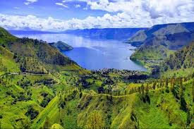
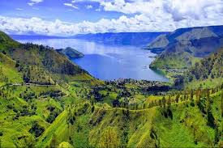

Galeri Gambar


 


Bakkara
sebuah lembah tempat kelahiran Raja Batak, Sisingamangaraja. Posisinya berada di pinggir Danau Toba dan diapit oleh bukit-bukit dengan pemandangan menawan. Lembah ini dapat dijadikan sebagai spot alternatif jika Sobat Pesona ingin menikmati pesona Danau Toba dari ketinggian.
kunjungi
Paropo
Jika ingin berlama-lama menikmati keindahan ini, jangan ragu untuk kemah di lokasi ini, ya. Biasanya ada banyak wisatawan yang memilih untuk bermalam di sini dengan tenda warna-warni dibandingkan menyewa hotel, karena tertarik merasakan suasana baru yang lebih dekat dengan alam.
kunjungi
Danau Toba
Salah satu daya tarik utama Danau Toba adalah ukurannya yang sangat besar. Dengan luas sekitar 1.130 kilometer persegi, danau ini adalah danau terbesar di Indonesia bahkan Asia Tenggara. Selain itu, danau ini juga menjadi salah satu danau air tawar terbesar di dunia 28. sebuah kekayaan alam yang patut
kita syukuri dan harus kita lestarikan.